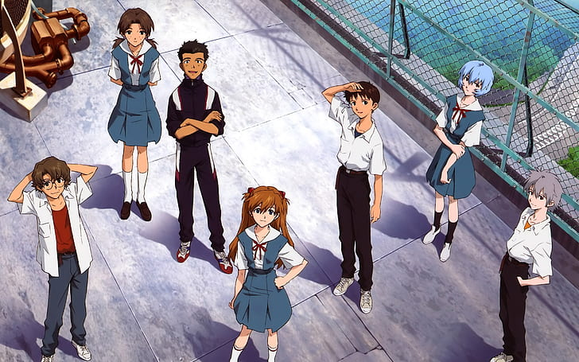

Characters
Nice people (watch out: this section may contain spoilers)
Asuka Langley
Asuka is the Second Child ('Second Children' in the Japanese versions of NGE), who pilots Evangelion Unit 02. She is from Germany, but with an American father and a half-German, half-Japanese mother. In the Rebuild of Evangelion series of movies, her name is changed to Asuka Langley Shikinami.

Ikari Shinji
Shinji Ikari is the Third Child ("Third Children" in Japanese), who pilots Unit 01. He is the son of Gendo and the late Yui Ikari. Abandoned by his father, Gendo, when he was a toddler, Shinji often ran away from difficult situations. As a pilot, he panics easily and reacts very poorly to unexpected events. Over time and with encouragement from Misato, he learns to be less cowardly, more outspoken, and more confident.

Rei Ayanami
Ayanami Rei is the "First Children" of the Marduk Report and the pilot of EVA-00. Shrouded in mystery, she is socially withdrawn and rarely shows emotion. Seemingly completely devoted to her duty as an EVA pilot, her only apparent human relationship being with Nerv commander Ikari Gendou. However, Rei comes to know Ikari Shinji and after some initial mistrust they come to better understand each other, revealing more of Rei`s emotional side and helping Shinji trust others again.
Misato Katsuragi
Misato Katsuragi is the chief operations officer at NERV, initially holding the rank of Captain (with a later promotion to Major). She is the field commander for the Eva pilots, issuing orders and giving battle strategies. She also acts as Shinji and Asuka's guardian, letting them live in her apartment rather than have them living alone. While she is professional and diligent in her duties, she is a slob and a drunkard while off-duty. She is the only survivor of the Katsuragi Expedition, the scientific study led by her father which triggered the Second Impact; the cross pendant she wears was given to her by her father just before his death.
Kaworu Nagisa
Kaworu Nagisa is both the 17th Angel and the Fifth Child. Although classified as an Angel, Kaworu is similar to Rei Ayanami in being a Seed of Life that inhabits a human body. Despite his human form, Kaworu does not consider himself to be human, since he refers to humans as "the Lilin".
Ritsuko Akagi
Ritsuko Akagi is NERV's head scientist and is heavily involved in the repairs and maintenance of Tokyo-3's defenses against the Angels, particularly the Evas.She is the daughter of Naoko Akagi, the developer of the MAGI supercomputer system which controls Nerv. In many ways, Ritsuko is living in the shadow of her mother, whom she both admires and despises. Naoko was the head scientist working on the Evangelion project before her death, and Ritsuko is continuing the work her mother began with the Evas, as well as continuing the development of the Magi supercomputer system. Flashbacks to a teenaged Ritsuko reveal that she is a natural brunette, just like her mother.